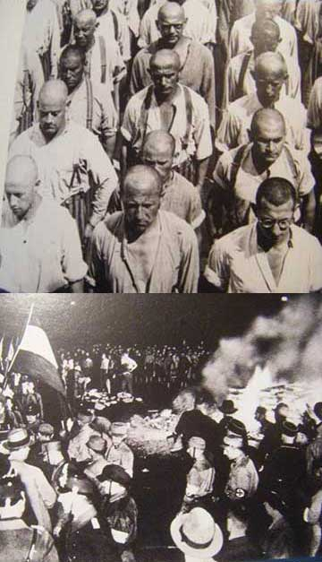
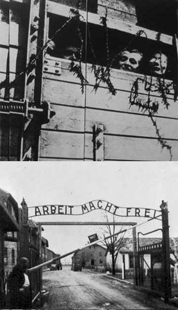

After defeat in World War One the German economy collapsed, making most people in the country poor. Hitler and his NAZI party exploited the overwhelming sense of injustice felt in the country and concentrated their anger on the search for a scapegoat.
By the time he became chancellor in 1933 the “enemies of the state” had been clearly identified – communists, socialists, liberals and ‘big business’. But, so their argument went, behind all those groups, manipulating things for their own gain, were the Jews.

Hitler started to imprison all political opponents in “concentration camps” in 1933. This picture was taken in Dachau, one of the earliest camps, which was to become a model for the camps that were built in the years to come.
Jewish literature was designated as “un-German” and numerous book-burning ceremonies took place – Hitler was sending the message that the country had to cleanse itself of all Jewish influence.
He wanted the country to
aspire to the “Aryan” ideal.
Racial purity was at the heart of
his dream of a greater Germany and a variety of scientific methods were devised to measure whether or not you belonged.
Although Jews were the main target for this policy of state sponsored racial discrimination, they were by no means the only group who were considered unworthy to be part of the pure Aryan “master race” that Hitler dreamt of. Thousands of gypsies were imprisoned and killed, along with homosexuals and the mentally ill.
Such brutality fostered a deep
sense of fear in German
society. Opposing what was
going on was a risky, potentially suicidal thing to do. It was far easier to turn a blind eye to these atrocities than to speak out about them.
The Nazis introduced a series of laws that gradually restricted the roles that Jews could play in German society. Ritual public humiliation of Jews became a common sight, making it easier to see Jews as inferior and subhuman. Anti-Semitism became official state policy – according to Hitler the only way to be a loyal, patriotic German was to hate Jews.
Things came to a head
in November 1938. On what
has become known as
“Kristallnacht” waves of organised mobs destroyed 7,500 Jewish shops, burnt half of the country’s synagogues, killed 91 Jews and injured countless others. 20,000 Jews were sent to concentration camps and, afterwards, the Jewish community was fined for the damage.
Throughout the 1930s Hitler invested huge amounts of money into equipping his army. His aim was to create a German-dominated Europe that would, in effect, be a one party state of which he would be the leader. To achieve that he started to invade neighbouring countries.
Austria and Czechoslovakia fell without the need to open fire
but it was the invasion of Poland that ignited the continent. In September 1939, not heeding Britain’s warning that invading Poland would result in them declaring war, Hitler unleashed the devastating fire power he had built up during the previous years.
The more land Hitler took control of, the bigger the number of Jews he had to deal with became. It was as important to deal with the “Jewish problem” as it was to expand the area of Europe he controlled.
The NAZIs needed to find a
“final solution” to the “Jewish Problem”.
Wherever Jews lived under NAZI rule they were made to wear yellow stars. These were designed to humiliate the wearers, but as time moved on they were used as a marker to make deportation even easier. Jews in the Warsaw Ghetto were made to wear a blue star.
Across Europe Jews were
herded together into Ghettos,
of which Warsaw’s was the
largest. These were unbearably over crowded places where deprivation, disease, starvation and cold blooded brutality caused unimaginable suffering.
To the NAZIs these “sub-human” Jews were becoming a nuisance. They were a time wasting, expensive burden that needed to be dealt with. Eventually the Ghettos just became holding pens from which the deportations would take place.

Hitler, along with the other
leaders of the NAZI party,
decided to expand the existing network of concentration camps. Many thousands of Jews had already lost their lives, but the rate of murder was about to accelerate hugely and ever more “efficient” methods of killing Jews were devised.
The most notorious of these camps was Auschwitz. It is estimated that out of the six million Jews that died in the Holocaust, over a million of them died in this dreadful place. When inmates arrived at the camp they were greeted by a sign that said “work sets you free” .
On arrival a “selection” was
made that divided people up
into those who were to die immediately and those that would be allowed to live a little longer.
Those who were chosen to die were taken to special “delousing” showers – and gassed.
After the war as many of the perpetrators of these crimes as possible were tried, convicted
and punished for what they did.